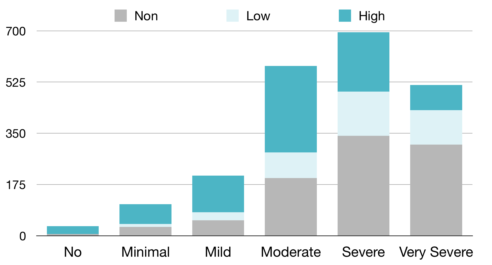
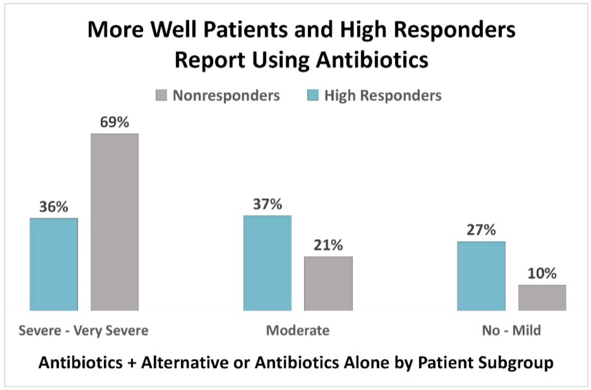
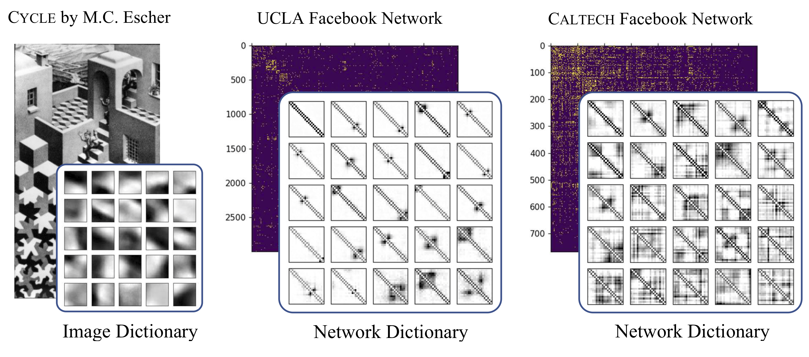
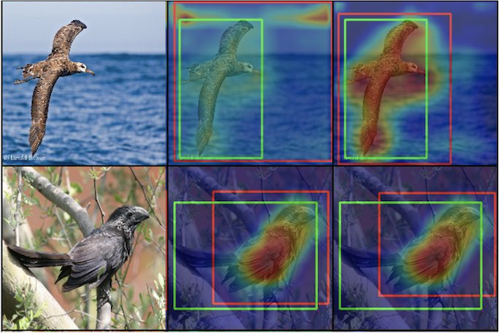
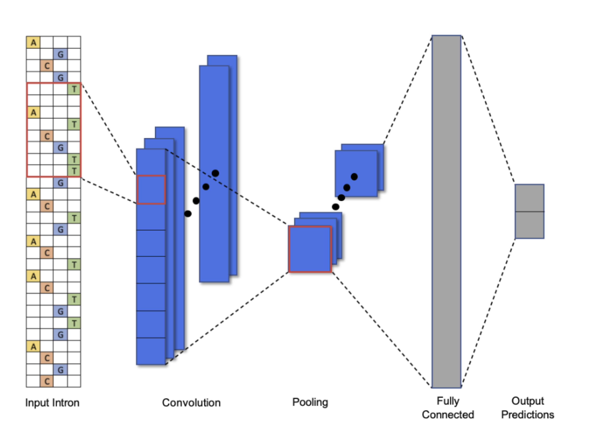
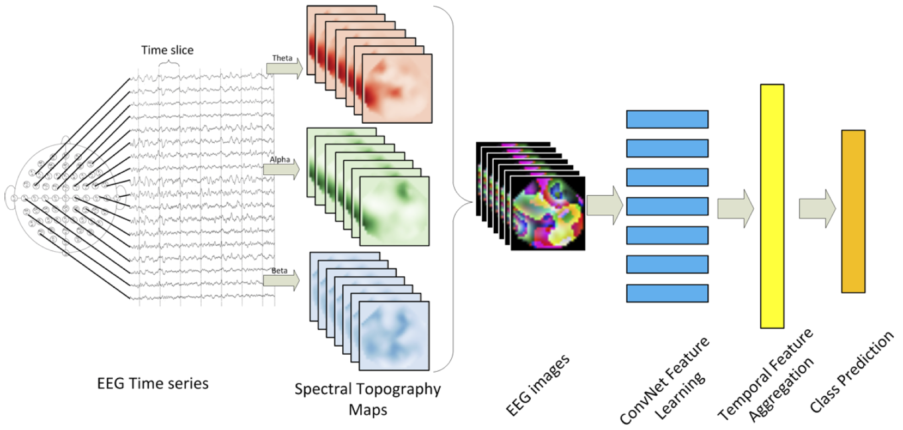
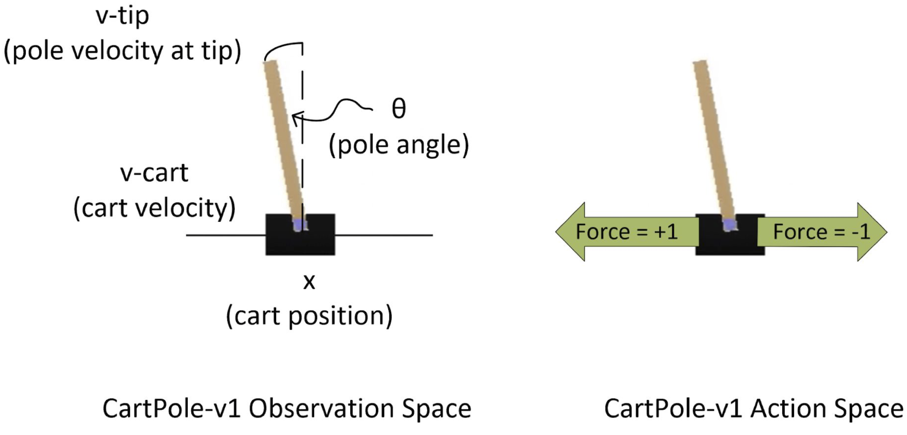
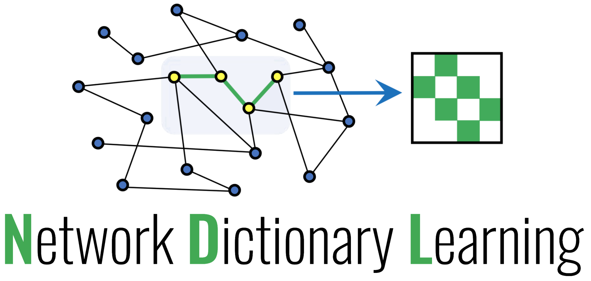

About Me
I am a third year at UCLA double majoring in Computer Science and Mathematics with a minor in Philosophy, and I am a research assistant for the UCLA Computational Applied Math Department. I am advised by Deanna Needell, and my other mentors are Jamie Haddock and Hanbaek Lyu.
Research
My current research areas are matrix/tensor factorization, topic modeling, computer vision, and deep learning.Conference Publications

Journal Publications


-
"Antibiotic Treatment Response In Persistent Lyme Disease: Why Do Some Patients Improve While Others Do Not?"
By L. Johnson, M. Shapiro, R. Stricker, J. Vendrow, J. Haddock, and D. Needell.
Healthcare, 2020. [Journal]
Preprints


-
"Neural Nonnegative CP Decomposition for Hierarchical Tensor Analysis."
By J. Vendrow, J. Haddock, and D. Needell.
Submitted, 2020.

-
"Weakly-Supervised Object Localization using Semi-Supervised Non-Negative Matrix Factorization."
By E. Sizikova*, J. Vendrow*, R. Grotheer, J. Haddock, L. Kassab, A. Kryshchenko, T. Merkh, M. Rajapaksha, H. V. Vo, C. Wang, K. Leonard, and D. Needell.
Submitted, 2020. *Authors contributed equally.

Class Projects


Software Development

Selected Coursework
Computer Science
CS M226: ML for Bioinformatics
CS 239: Quantum Programming
CS 181: Formal Languages and Automata
CS 146: Machine Learning
CS 180: Algorithms and Complexity
CS 111: Operating Systems
CS M226: ML for Bioinformatics
CS 239: Quantum Programming
CS 181: Formal Languages and Automata
CS 146: Machine Learning
CS 180: Algorithms and Complexity
CS 111: Operating Systems
Electrical Engineering
EE 239AS: Reinforcement Learning
EE 247: Neural Nets and Deep Learning
EE 236A: Linear Programming
EE 236B: Convex Optimization
EE 133A: Applied Computing
EE 133B: Optimization
EE 239AS: Reinforcement Learning
EE 247: Neural Nets and Deep Learning
EE 236A: Linear Programming
EE 236B: Convex Optimization
EE 133A: Applied Computing
EE 133B: Optimization
Mathematics
Math 171: Stochastic Processes
Math 170A: Probability Theory I
Math 170B: Probability Theory II
Math 131A: Real Analysis I
Math 131B: Real Analysis II
Math 115A: Linear Algebra
Math 121: Topology
Math 171: Stochastic Processes
Math 170A: Probability Theory I
Math 170B: Probability Theory II
Math 131A: Real Analysis I
Math 131B: Real Analysis II
Math 115A: Linear Algebra
Math 121: Topology